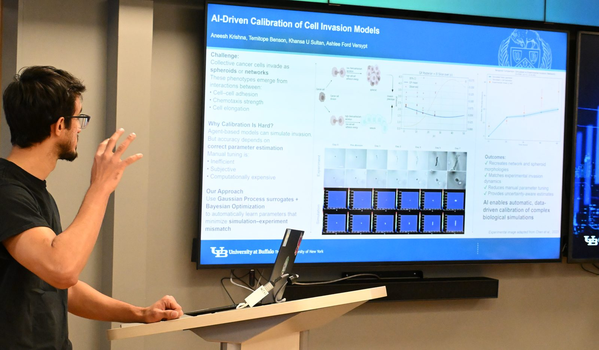

Calibrating agent based models of collective cancer cell invasion
Collective cancer cells invade tissue as either compact spheroids or branching networks, and agent based models (in CompuCell3D) can simulate both. The catch is that accuracy depends on parameters that are hard to tune: cell adhesion strength, chemoattractant secretion rate, and chemotactic strength. Tuning them by hand is slow, subjective, and computationally expensive.
I built a constrained Bayesian optimization framework with Gaussian process surrogates and a feasibility aware acquisition function (Expected Improvement combined with probability of feasibility) that calibrates these models against experimental microscopy data. It recovers parameter sets that reproduce both the invasive network phenotype and the non invasive spheroid phenotype, with uncertainty aware estimates and far fewer simulator evaluations than grid or Monte Carlo search.